The photo notebook.
All published places, photographs and visit notes. This page works without JavaScript.
Horsey Gap
Norfolk · approximate public location
Grey seal and ruddy turnstones photographed at Horsey Gap.
Habitat: Coast, Beach
2026-10-31
Photographed a grey seal and ruddy turnstones at Horsey Gap on 31 October 2026.
Grey Seal 灰海豹
Halichoerus grypus
Other wildlife
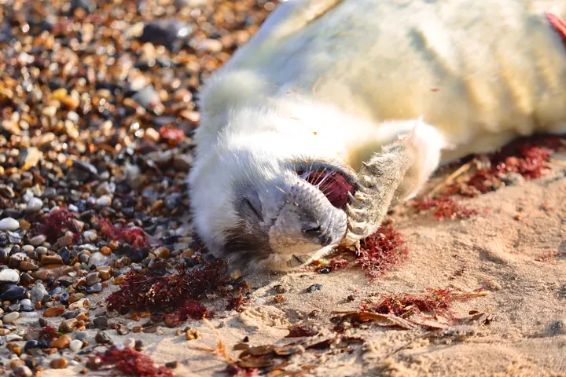
Grey seal pup at Horsey Gap · 31 October 2026.
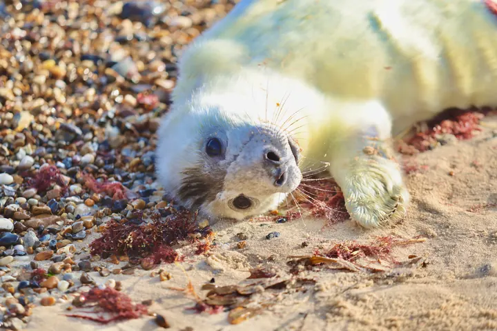
Grey seal pup at Horsey Gap · 31 October 2026.
Ruddy Turnstone 翻石鹬
Arenaria interpres
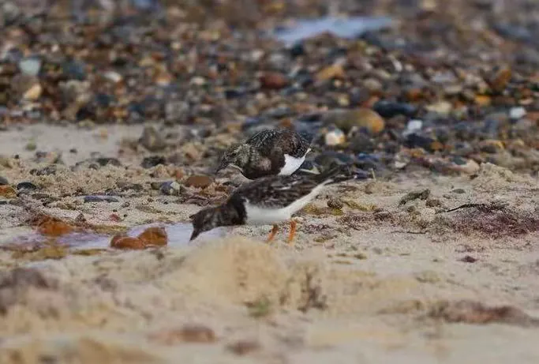
Ruddy turnstones at Horsey Gap · 31 October 2026.
View on the interactive map ↗
Rodley Nature Reserve
West Yorkshire · approximate public location
Black-headed gulls, mute swans and a grey wagtail photographed at Rodley Nature Reserve.
Habitat: Wetland
2026-08-01
Photographed black-headed gulls, mute swans and a grey wagtail at Rodley Nature Reserve on 1 August 2026.
Black-headed Gull 红嘴鸥
Chroicocephalus ridibundus
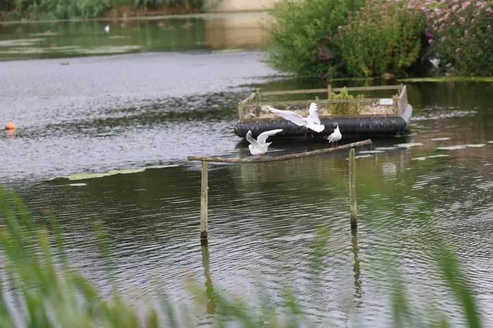
Black-headed gulls at Rodley Nature Reserve · 1 August 2026.
Mute Swan 疣鼻天鹅
Cygnus olor
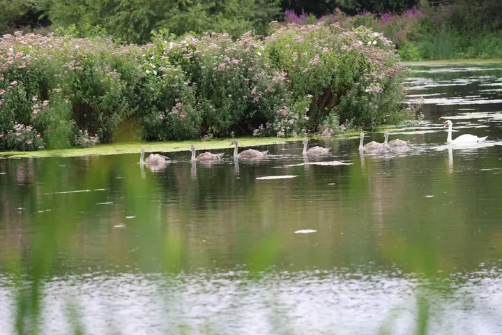
Mute swan and cygnets at Rodley Nature Reserve · 1 August 2026.
Grey Wagtail 灰鹡鸰
Motacilla cinerea
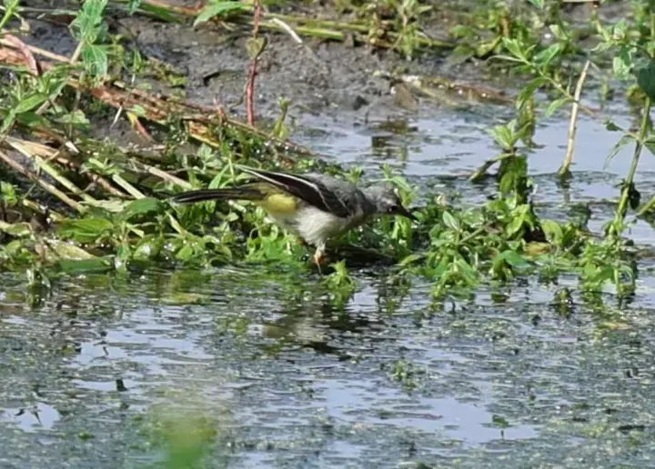
Grey wagtail at Rodley Nature Reserve · 1 August 2026.
View on the interactive map ↗
RSPB Fairburn Ings
West Yorkshire · approximate public location
Black swan, mute swan and tufted ducks photographed at RSPB Fairburn Ings.
Habitat: Wetland
2026-10-17
Photographed a black swan, a mute swan and tufted ducks at RSPB Fairburn Ings on 17 October 2026.
Black Swan 黑天鹅
Cygnus atratus
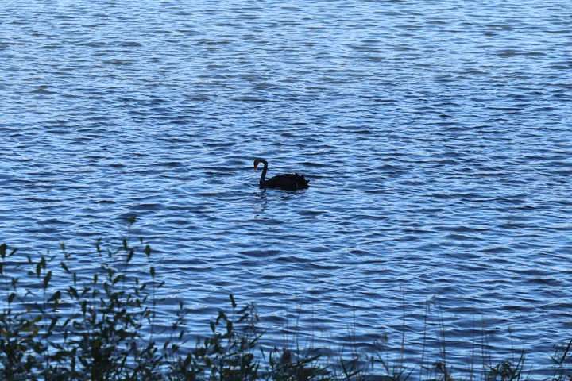
Black swan at RSPB Fairburn Ings · 17 October 2026.
Mute Swan 疣鼻天鹅
Cygnus olor
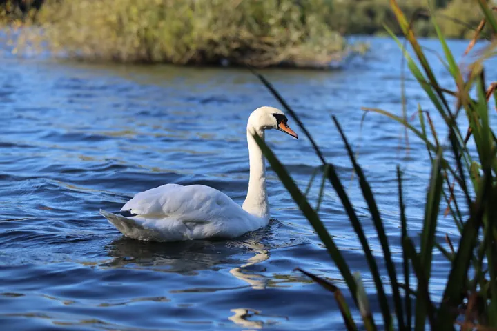
Mute swan at RSPB Fairburn Ings · 17 October 2026.
Tufted Duck 凤头潜鸭
Aythya fuligula
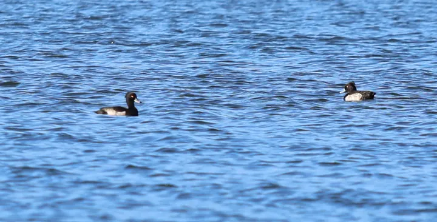
Tufted ducks at RSPB Fairburn Ings · 17 October 2026.
View on the interactive map ↗
RSPB Rainham Marshes
Essex · approximate public location
Black-tailed godwits and northern lapwings photographed at RSPB Rainham Marshes.
Habitat: Wetland
2026-09-02
Photographed black-tailed godwits and northern lapwings at RSPB Rainham Marshes on 2 September 2026.
Black-tailed Godwit 黑尾塍鹬
Limosa limosa
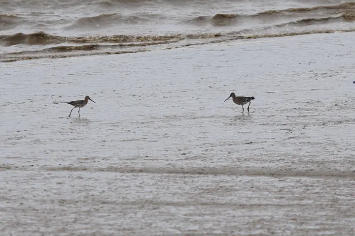
Black-tailed godwits at RSPB Rainham Marshes · 2 September 2026.
Northern Lapwing 凤头麦鸡
Vanellus vanellus
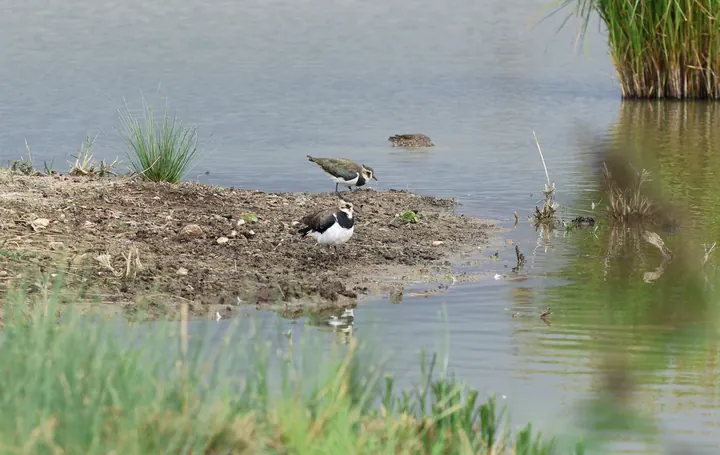
Northern lapwings at RSPB Rainham Marshes · 2 September 2026.
View on the interactive map ↗
University of Leeds
West Yorkshire · approximate public location
Mallard and grey heron photographed on the University of Leeds campus.
Habitat: Campus
2026-08-10
Photographed a grey heron at the University of Leeds on 10 August 2026.
Grey Heron 苍鹭
Ardea cinerea
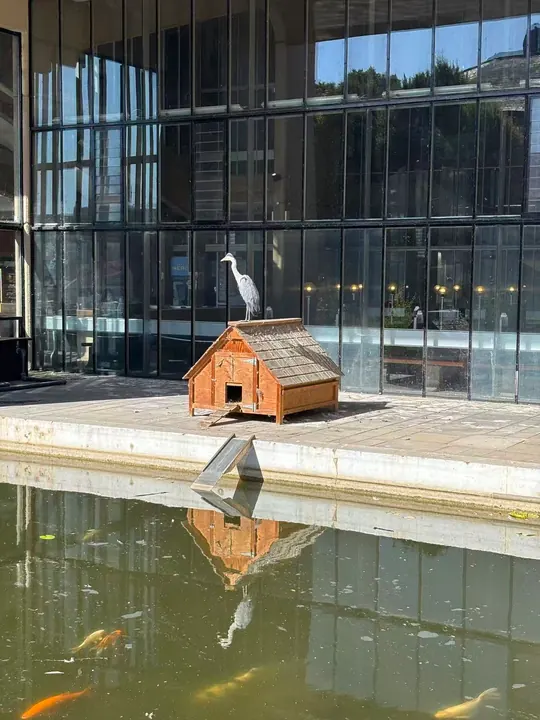
Grey heron at the University of Leeds · 10 August 2026.
2026-08-09
Photographed a mallard at the University of Leeds on 9 August 2026.
Mallard 绿头鸭
Anas platyrhynchos
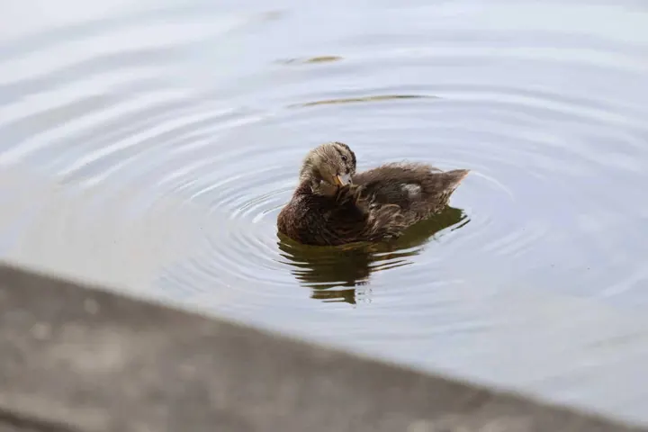
Mallard at the University of Leeds · 9 August 2026.
View on the interactive map ↗